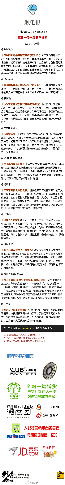

[呵呵]//@触电报微博: 感谢@Ada李力@炮哥是我@ 龚文祥 @广东电商圈子@郭-凡生_股权激励@吴蚊米@马莲根@阿湘哥说@黄刚-物流与供应链@托尼富 精彩分享！@触电报微博:#每日十佳电商原创微博# ❶【互联网公司是不是就不应该盈利？】❷【商业综合体最大的敌人是“不逛街”】❸【小米官网的成功模式几乎无法模仿】❹【小商家误区】❺【企业年终常见问题】❻【卖家不要被大数据洗脑】...编辑：@触电报马一铭 